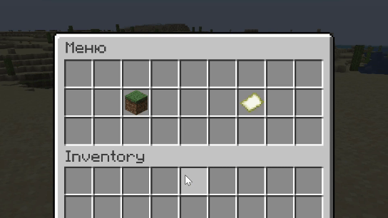

Правила сервера:
- Запрещены читы.
- Запрещено быть токсичным.
Инструкция по игре:
За каждый проведенный на сервере час вам выдается 12 блоков территории. А также за 1, 10, 100 и 1000 отыгранных часов начисляется по одному слоту для участка. Используя накопленные блоки вы можете создавать и расширять участки.
Посмотреть доступные блоки и участки вы можете с помощью команды /m.
Используйте обычную палку для управления участками и проверки блоков. ПКМ с палкой в руках для переключения режима.

Режимы:
- “Территория” - ЛКМ по местности отображает блоки участков. Если ваш участок - зеленым, цвет. Чужой - красным. Ничей - серым.

- “Участок”:
- Создание участка - ЛКМ по первому блоку, двойной ЛКМ по второму блоку и Шифт ПКМ для создания участка.
- Выделение участка - ПКМ по любому блоку участка.
- Изменение границ участка - ЛКМ по одному из углов участка, двойной ЛКМ по новому блоку, на который переместится угол и Шифт ПКМ для подтверждения. (!) При уменьшении размера участка, или его удалении, возращена будет лишь половина блоков.


“Блок” - ЛКМ по любому блоку для того чтобы увидеть защищен ли он. Если он защищен и вы можете его сломать, текст будет зеленым, если он защищен но вы не можете его сломать - красным.

Участки сильно отличаются от тех приватов, с которыми все знакомы. Участки двухмерные (они покрывают всю область вертикально, по координате Y) и защищают только блоки, размещенные вами же. Они никак не влияют на все остальные блоки в области. То есть даже если вы создадите участок, на нем всё ещё смогут копать и строить другие игроки. Участки лишь значительно усложняют разрушение ваших блоков для других игроков.
Защита блоков:
При попытке другого игрока разрушить ваш блок на вашем участке без специальных инструментов, он получит урон и не разрушит блок.
Разрушить чужие блоки можно только используя алмазные/незеритовые топор, кирку и лопату.
При этом за каждый “удар” по блоку с инструмента снимется прочность: с кирки и топора - 384 единицы, с лопаты - 1152 единицы.
У каждого блока есть свое значение прочности. Чтобы его разрушить, нужно снять всю прочность. У Блока Незерита - 16 единиц прочности, у Алмазного Блока - 8, у Обсидиана и Железных Блоков - 6. У всех остальных блоков по 3 единицы прочности. Также существуют блоки исключения, которые никак не защищаются (Растения, Строительные Леса, Свечи, Шалкера)
Каждая единица прочности это один удар по блоку. Прочность блока автоматически восстанавливается через 3 минуты после последнего удара.
Защищенные блоки устойчивы к огню и взрывам. Но вы всё ещё можете взорвать СВОИ блоки крипером.
Помимо защиты блоков от разрушения на сервере также присутствуют ключи, с помощью которых вы можете запирать двери, люки, сундуки и бочки на своем участке.
Чтобы создать ключ, объедините Крюк и Железный Самородок в сетке крафта. Вы получите чистый ключ, который можно будет привязать к нескольким блокам (двойные сундуки считаются за один блок) нажатием Шифт ПКМ с ключом в руках.
После привязки, ключом можно будет запирать и отпирать привязанный блок через ПКМ. Чтобы оставить блок в открытом или закрытом состоянии используйте Шифт.


Будьте осторожны, ведь любой, кто овладеет вашим ключом, будет иметь доступ к привязанным блокам. Поменять замки можно просто разрушив блок, поставив его заново и привязав новый ключ.
Также для участка можно установить отношение с другими игроками с помощью команды /grant. Есть такие отношения:
- member - Если у игрока такое отношение к чужому участку, все его блоки на этом участке будут также защищены, как и блоки самого владельца участка. Их сможет сломать только он, или владелец участка. Сам игрок с этим отношением всё ещё не может ломать блоки владельца участка.
- claim - Применив это отношение, вы можете присвоить чужие блоки на своем участке. То есть эти блоки будут защищены, но даже их владелец не сможет их разрушить.
- authority - тоже что и member, только здесь игрок может ломать ещё и блоки владельца.
- сlear - удаляет отношение.
Пример использования:
/grant SomePlayer MyRegion(1) member /grant SomePlayer MyRegion(1) clearЧтобы удалить участок используйте команду:
/delete MyRegion(1)Чат
Присутствуют локальный и глобальный чаты, но вы можете этого не заметить. Вместо привычных обозначений [L] и [G], сообщения отображаются в различныех цветах, в зависимости от их типа.
Радиус локального чата - 50 блоков.
Чтобы отправить сообщение в глобальный чат, ставьте "!" в начале.
Все локальные сообщения белого цвета. Глобальные сообщения в локальном радиусе отображаются голубыми, а за пределами радиуса, для остальных игроков - серыми.
Дополнительные настройки для большего погружения и замедления игры:
- Каждый день на сервере длится 1 час (30 минут день и 30 минут ночь).
- Пропустить ночь невозможно.
- При возрождении после смерти у игроков остается лишь 2 единицы голода.
- Координаты скрыты и их использование с помощью модов не одобряется.
- Текущий размер мира - 4000х4000 (С каждым обновлением мир расширяется)